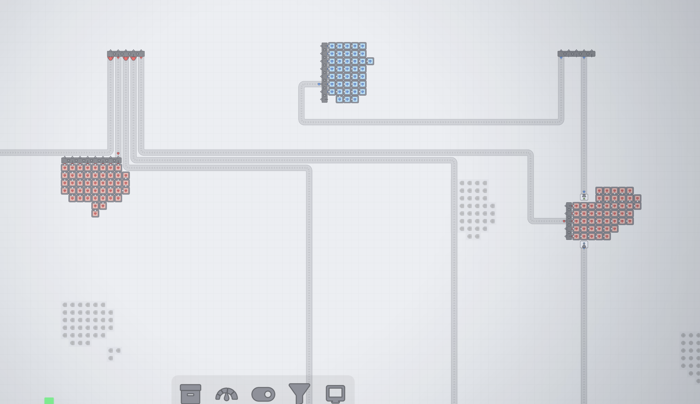

用途
这个 Mod 面向大工厂规划：可以在进入地图总览之前看得更远，同时降低远距离观察时传送带物品和动画箭头带来的绘制负担。
核心功能
- 进入地图总览前的缩小范围可设置为原版的 1–8×，默认 2×。
- 默认实际镜头缩放达到 0.5× 或以下时，仅绘制每条传送带路径的首尾物品。
- 简化模式中的传送带使用无动态箭头的静态底图。
- 鼠标靠近端点物品会放大显示；相邻的同类端点会合并，避免视觉堆叠。
- 配置依据 camera.zoomLevel，而不是 1× / 5× / 100× 的模拟倍率。
使用方法
- 启用 Structured Mod Settings UI 后，在「地图总览缩放」卡片中调整范围和简化阈值。
- 对超大型工厂建议保持「低缩放时简化传送带物品」开启。
- 如果只想恢复原版地图范围，将预览范围设置为 1×。
实机截图


兼容性与注意事项
该 Mod 不改变普通建造镜头的最小缩放限制，只调整进入地图总览前的阈值。